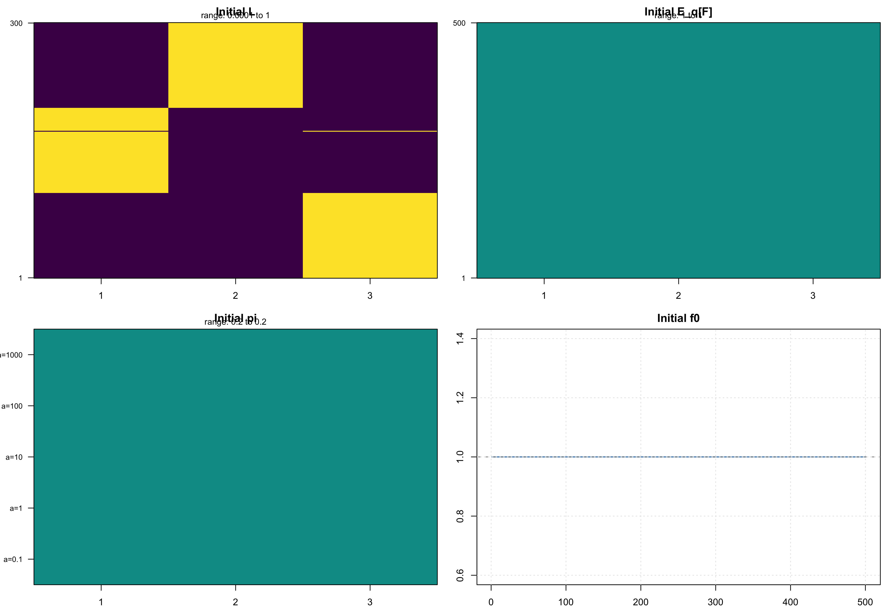
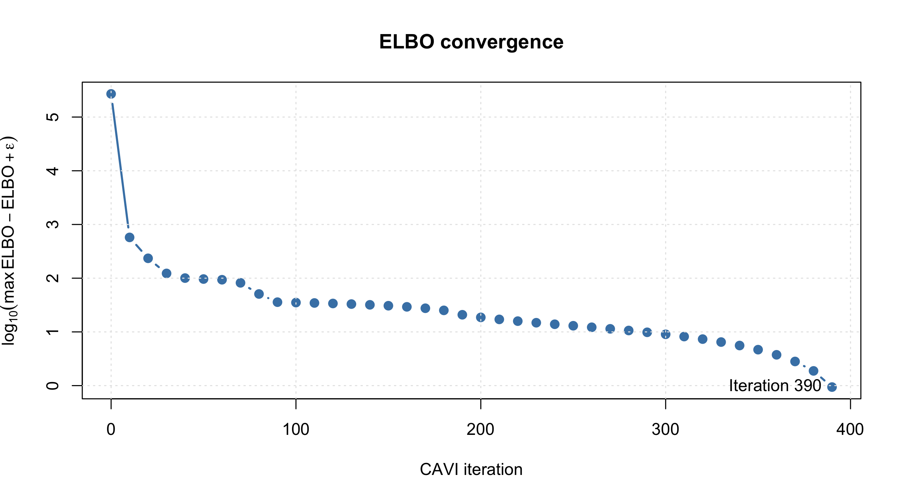
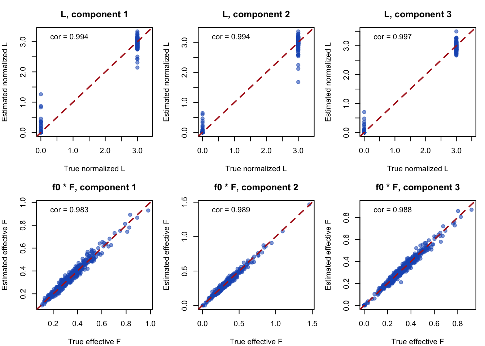
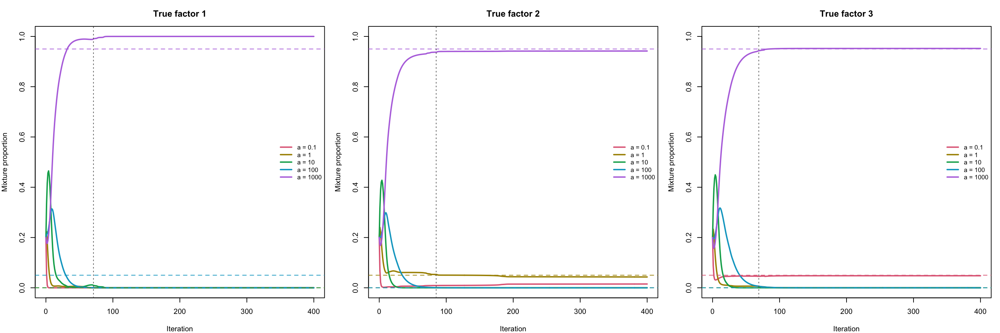
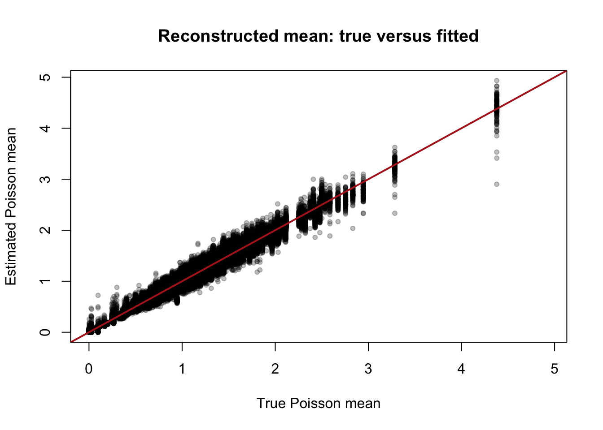
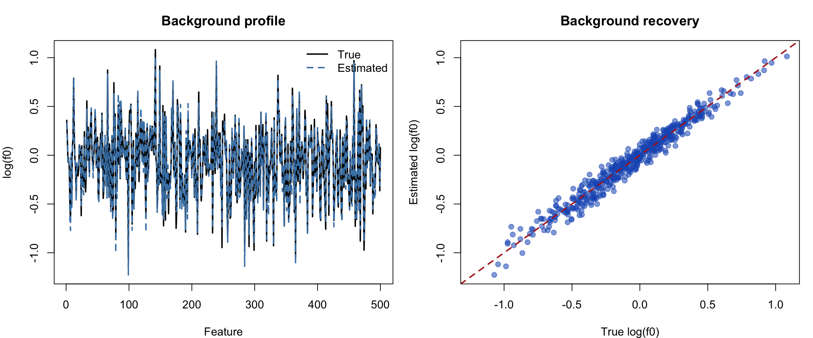
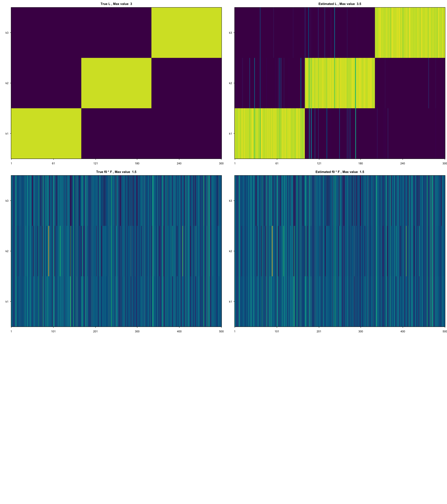
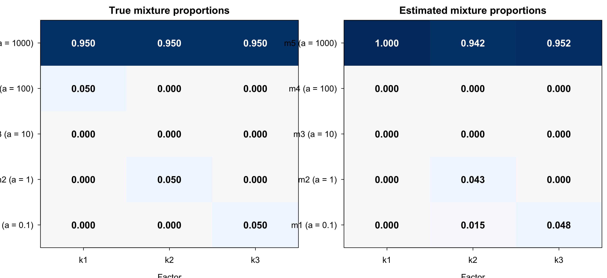

Last updated: 2026-09-08
Checks: 7 0
Knit directory: background/
This reproducible R Markdown analysis was created with workflowr (version 1.7.2). The Checks tab describes the reproducibility checks that were applied when the results were created. The Past versions tab lists the development history.
Great! Since the R Markdown file has been committed to the Git repository, you know the exact version of the code that produced these results.
Great job! The global environment was empty. Objects defined in the global environment can affect the analysis in your R Markdown file in unknown ways. For reproduciblity it’s best to always run the code in an empty environment.
The command set.seed(20260201) was run prior to running
the code in the R Markdown file. Setting a seed ensures that any results
that rely on randomness, e.g. subsampling or permutations, are
reproducible.
Great job! Recording the operating system, R version, and package versions is critical for reproducibility.
Nice! There were no cached chunks for this analysis, so you can be confident that you successfully produced the results during this run.
Great job! Using relative paths to the files within your workflowr project makes it easier to run your code on other machines.
Great! You are using Git for version control. Tracking code development and connecting the code version to the results is critical for reproducibility.
The results in this page were generated with repository version 88c2d50. See the Past versions tab to see a history of the changes made to the R Markdown and HTML files.
Note that you need to be careful to ensure that all relevant files for
the analysis have been committed to Git prior to generating the results
(you can use wflow_publish or
wflow_git_commit). workflowr only checks the R Markdown
file, but you know if there are other scripts or data files that it
depends on. Below is the status of the Git repository when the results
were generated:
Ignored files:
Ignored: .DS_Store
Ignored: .RData
Ignored: .Rhistory
Ignored: .Rproj.user/
Ignored: analysis/.DS_Store
Untracked files:
Untracked: Rplots.pdf
Untracked: analysis/.ipynb_checkpoints/
Untracked: analysis/Untitled.ipynb
Untracked: analysis/bg_news.Rmd
Untracked: analysis/gene_lst.txt
Untracked: analysis/gtex_processing.ipynb
Untracked: analysis/omim_topics_k=40.RData
Untracked: analysis/v1.Rmd
Untracked: analysis/v2.Rmd
Untracked: tests/
Untracked: writeup/
Unstaged changes:
Deleted: analysis/bg.Rmd
Modified: analysis/index.Rmd
Modified: analysis/main.Rmd
Deleted: analysis/omim.Rmd
Modified: background.Rproj
Deleted: code/README.md
Deleted: data/README.md
Note that any generated files, e.g. HTML, png, CSS, etc., are not included in this status report because it is ok for generated content to have uncommitted changes.
These are the previous versions of the repository in which changes were
made to the R Markdown (analysis/bg_sim.Rmd) and HTML
(docs/bg_sim.html) files. If you’ve configured a remote Git
repository (see ?wflow_git_remote), click on the hyperlinks
in the table below to view the files as they were in that past version.
| File | Version | Author | Date | Message |
|---|---|---|---|---|
| Rmd | 88c2d50 | jiheeyy | 2026-09-08 | Publish the initial files for myproject |
library(here)
here()[1] "/Users/jiheeyou/background"source(here("docs","code","bg_implement.R"))Run ebpmf-bg full loop on simulated data.
a_grid <- c(0.1, 1, 10, 100, 1000)
pi_mat <- cbind(
mostly_background = c(0, 0, 0, 0.05, 0.95),
broad_signal = c(0, 0.05, 0, 0, 0.95),
near_zero_signal = c(0.05, 0, 0, 0, 0.95)
)
# Create data
settings <- list(
n = 300,
p = 500,
K = 3,
a = a_grid, # length-M Gamma shape list
pi = pi_mat,
seed = 1L,
loading_mode = "single" # "single", "primary_secondary"
)
synthetic <- do.call(simulate_background_model, settings)
# Experiment switches.
init <- "deviance_kmeans" # "gamma", "deviance_kmeans", or "fasttopics"
oracle_f0 <- FALSE
oracle_pi <- FALSE
oracle_l <- FALSE
# Fit controls.
max_niter <- 400L
elbo_every <- 10L
fit_elbo_tolerance <- 1e-6
fit_elbo_patience <- 3Linit <- match.arg(init, c("gamma", "deviance_kmeans", "fasttopics"))
# Avoid an unnecessary k-means run when oracle L will replace it.
state <- initialize_state(
synthetic$X,
settings$K,
settings$a,
L_init = if (oracle_l) "gamma" else init,
seed = 2L
)
# Apply any known parameters. Oracle L is initialization only; CAVI updates it.
if (oracle_f0) state$f0 <- synthetic$f0
if (oracle_pi) {
state$pi <- synthetic$pi
state$qF <- initialize_qF(state$pi, settings$a, ncol(synthetic$X))
}
if (oracle_l) state$L <- synthetic$L
# Label the initialization used by the diagnostic summary.
initialization_method <- if (oracle_l) "oracle L" else switch(
init,
gamma = "Gamma-random L",
deviance_kmeans = "deviance k-means L",
fasttopics = "fastTopics L"
)
# Save the exact parameters entering CAVI for the diagnostic plots below.
L_initial <- state$L
F_initial <- state$qF$mean
pi_initial <- state$pi
f0_initial <- state$f0
# run_ebpmf_bg_cavi() synchronizes qZ before evaluating the initial ELBO.
M <- length(settings$a)
main_fit <- run_ebpmf_bg_cavi(
state,
synthetic$X,
settings$a,
max_niter = max_niter,
elbo_every = elbo_every,
fit_elbo_tolerance = fit_elbo_tolerance,
fit_elbo_patience = fit_elbo_patience,
estimate_pi = !oracle_pi,
estimate_f0 = !oracle_f0
)
state <- main_fit$state
elbo_trace <- main_fit$elbo_trace
pi_trace <- main_fit$pi_trace
niter <- main_fit$completed_niter
if (oracle_pi) stopifnot(max(abs(state$pi - synthetic$pi)) < 1e-15)
# Summarize and verify ELBO changes between stored checkpoints.
elbo_comparison <- data.frame(
iteration = elbo_trace$iteration[-1L],
elbo = tail(elbo_trace$elbo, -1L),
change = diff(elbo_trace$elbo),
relative_change = elbo_trace$relative_change[-1L]
)
stopifnot(all(elbo_comparison$change >= -1e-8))
fit_summary <- data.frame(
maximum_iterations = max_niter,
completed_iterations = niter,
elbo_every = elbo_every,
converged = main_fit$converged,
oracle_f0 = oracle_f0,
oracle_pi = oracle_pi,
oracle_l = oracle_l,
initialization = initialization_method
)
tail(elbo_comparison, 10L) iteration elbo change relative_change
31 310 -137287.5 0.8286180 6.035604e-06
32 320 -137286.7 0.8508826 6.197815e-06
33 330 -137285.8 0.8726944 6.356732e-06
34 340 -137284.9 0.8923574 6.499999e-06
35 350 -137284.0 0.9088632 6.620271e-06
36 360 -137283.1 0.9217690 6.714323e-06
37 370 -137282.1 0.9310363 6.781873e-06
38 380 -137281.2 0.9368710 6.824421e-06
39 390 -137280.3 0.9396031 6.844369e-06
40 400 -137279.3 0.9396323 6.844628e-06fit_summary maximum_iterations completed_iterations elbo_every converged oracle_f0
1 400 400 10 FALSE FALSE
oracle_pi oracle_l initialization
1 FALSE FALSE deviance k-means LThe plots below provide diagnostic tools for interpreting EBPMF-BG runs. I eventually plan to use them in a coherent experimental log that includes earlier unsuccessful results; for now, this section documents only the visualization code.
The panels below show the state that enters the main CAVI loop.
F_initial is the variational mean qF$mean.
Factor columns are shown in their actual fitting order, without post-hoc
alignment to the simulated truth.
initial_heatmap <- function(
value,
main,
row_label,
row_axis_at = NULL,
row_axis_labels = NULL
) {
color_limit <- range(value, finite = TRUE)
if (diff(color_limit) == 0) {
padding <- max(abs(color_limit[1L]), 1) * 1e-8
color_limit <- color_limit + c(-padding, padding)
}
image(
x = seq_len(ncol(value)),
y = seq_len(nrow(value)),
z = t(value),
col = hcl.colors(80L, "Viridis"),
zlim = color_limit,
xlab = "Factor",
ylab = row_label,
main = main,
axes = FALSE,
useRaster = TRUE
)
axis(1, at = seq_len(ncol(value)), labels = seq_len(ncol(value)))
if (is.null(row_axis_at)) {
row_axis_at <- unique(c(1L, nrow(value)))
row_axis_labels <- row_axis_at
}
axis(
2,
at = row_axis_at,
labels = row_axis_labels,
las = 1,
cex.axis = 0.8
)
box()
mtext(
sprintf("range: %.3g to %.3g", min(value), max(value)),
side = 3,
line = 0.2,
cex = 0.75
)
}
old_par <- par(mfrow = c(2, 2), mar = c(2.5, 3, 2, 0.5))
initial_heatmap(
L_initial,
main = "Initial L",
row_label = "Document"
)
initial_heatmap(
F_initial,
main = "Initial E_q[F]",
row_label = "Feature"
)
initial_heatmap(
pi_initial,
main = "Initial pi",
row_label = "Gamma component",
row_axis_at = seq_len(nrow(pi_initial)),
row_axis_labels = paste0("a=", settings$a)
)
plot(
seq_along(f0_initial),
f0_initial,
type = "l",
lwd = 1.5,
col = "steelblue",
xlab = "Feature",
ylab = "f0",
main = "Initial f0"
)
abline(h = 1, col = "grey50", lty = 2)
grid(col = "grey90")
par(old_par)Plot the log-scaled gap from the best recorded ELBO. Values decrease
toward log10(elbo_plot_epsilon) as the fit converges.
elbo_plot_epsilon <- 1e-8
best_elbo <- max(elbo_trace$elbo)
elbo_by_iteration <- head(
elbo_trace[, c("iteration", "elbo")],
-1L
)
elbo_by_iteration$log10_gap <- log10(
best_elbo - elbo_by_iteration$elbo + elbo_plot_epsilon
)
plot(
log10_gap ~ iteration,
data = elbo_by_iteration,
type = "b",
pch = 19,
lwd = 2,
col = "steelblue",
xlab = "CAVI iteration",
ylab = expression(log[10](max(ELBO) - ELBO + epsilon)),
main = "ELBO convergence"
)
grid(col = "grey90")
# Label the final visible checkpoint (iteration 390 in the current run).
last_point <- tail(elbo_by_iteration, 1L)
text(
last_point$iteration,
last_point$log10_gap,
labels = paste("Iteration", last_point$iteration),
pos = 2
)
Factor labels and scales are not intrinsically identifiable: components may be permuted. The comparisons below therefore align components by their rate contributions (with cosine similarity) and adopt a common scale before assessing recovery.
## Posterior point estimates
L_true <- synthetic$L
F_true <- synthetic$F
f0_true <- synthetic$f0
pi_true <- synthetic$pi
L_hat <- state$L
F_hat <- state$qF$mean
f0_hat <- state$f0
pi_hat <- state$pi
K <- ncol(L_true)
## Effective feature factors: these are what enter the likelihood
B_true <- sweep(F_true, 1, f0_true, "*")
B_hat <- sweep(F_hat, 1, f0_hat, "*")
## ------------------------------------------------------------------
## 1. Match estimated components to true components
## ------------------------------------------------------------------
# For rank-one matrices, <l1 b1', l2 b2'> = <l1, l2><b1, b2> and
# ||l b'||_F = ||l|| ||b||. Use these identities to avoid constructing any
# dense n-by-p component-specific Poisson-rate matrices.
loading_inner_product <- crossprod(L_true, L_hat)
feature_inner_product <- crossprod(B_true, B_hat)
true_component_norm <-
sqrt(diag(crossprod(L_true))) * sqrt(diag(crossprod(B_true)))
fitted_component_norm <-
sqrt(diag(crossprod(L_hat))) * sqrt(diag(crossprod(B_hat)))
component_similarity <-
(loading_inner_product * feature_inner_product) /
outer(true_component_norm, fitted_component_norm)
# Base-R permutation generator; practical for a modest number of factors.
all_permutations <- function(x) {
if (length(x) == 1L) {
return(matrix(x, nrow = 1L))
}
do.call(
rbind,
lapply(seq_along(x), function(i) {
cbind(x[i], all_permutations(x[-i]))
})
)
}
permutations <- all_permutations(seq_len(K))
permutation_score <- apply(permutations, 1, function(perm) {
sum(component_similarity[cbind(seq_len(K), perm)])
})
best_permutation <- permutations[which.max(permutation_score), ]
# Reorder estimated quantities to match the true components.
L_hat <- L_hat[, best_permutation, drop = FALSE]
F_hat <- F_hat[, best_permutation, drop = FALSE]
B_hat <- B_hat[, best_permutation, drop = FALSE]
pi_hat <- pi_hat[, best_permutation, drop = FALSE]
## ------------------------------------------------------------------
## 2. Resolve the remaining component-wise L/B scale ambiguity
## ------------------------------------------------------------------
## L[, k] * B[, k]' is unchanged if L[, k] is divided by c and
## B[, k] is multiplied by c. Use mean(L[, k]) = 1 as a convention.
canonicalize <- function(L, B) {
component_scale <- colMeans(L)
list(
L = sweep(L, 2, component_scale, "/"),
B = sweep(B, 2, component_scale, "*")
)
}
true_canonical <- canonicalize(L_true, B_true)
hat_canonical <- canonicalize(L_hat, B_hat)
L_true_plot <- true_canonical$L
L_hat_plot <- hat_canonical$L
B_true_plot <- true_canonical$B
B_hat_plot <- hat_canonical$B
## ------------------------------------------------------------------
## 3. Direct factor-comparison plots
## ------------------------------------------------------------------
plot_comparison <- function(truth, estimate, main, xlab, ylab) {
limits <- range(c(truth, estimate), finite = TRUE)
plot(
truth, estimate,
pch = 19,
col = rgb(0.1, 0.35, 0.75, 0.55),
xlim = limits,
ylim = limits,
xlab = xlab,
ylab = ylab,
main = main
)
abline(0, 1, col = "firebrick", lwd = 2, lty = 2)
legend(
"topleft",
legend = sprintf("cor = %.3f", cor(truth, estimate)),
bty = "n"
)
}
old_par <- par(mfrow = c(2, K), mar = c(4, 4, 3, 1))
for (k in seq_len(K)) {
plot_comparison(
L_true_plot[, k],
L_hat_plot[, k],
main = sprintf("L, component %d", k),
xlab = "True normalized L",
ylab = "Estimated normalized L"
)
}
for (k in seq_len(K)) {
plot_comparison(
B_true_plot[, k],
B_hat_plot[, k],
main = sprintf("f0 * F, component %d", k),
xlab = "True effective F",
ylab = "Estimated effective F"
)
}
par(old_par)mixprop_tolerance <- 0.01
iterations <- 0:niter
# best_permutation maps:
# true factor k -> estimated factor column best_permutation[k]
#
# Apply one fixed final permutation to the complete trajectory.
pi_trace_aligned <- pi_trace[
,
,
best_permutation,
drop = FALSE
]
dimnames(pi_trace_aligned)$estimated_factor <-
paste0("k", seq_len(K))
# Confirm that the final trace values equal the aligned pi used
# by the mixture-proportion heatmap.
stopifnot(
isTRUE(all.equal(
unname(pi_trace_aligned[niter + 1L, , ]),
unname(pi_hat),
tolerance = 1e-10
))
)
# First iteration after which all proportions remain within the
# tolerance of their final values.
stabilization_iteration <- vapply(
seq_len(K),
function(k) {
final_pi <- pi_trace_aligned[niter + 1L, , k]
distance_from_final <- apply(
abs(sweep(
pi_trace_aligned[, , k],
2,
final_pi,
"-"
)),
1,
max
)
future_maximum <- rev(cummax(rev(distance_from_final)))
first_stable <- which(
future_maximum <= mixprop_tolerance
)[1]
if (is.na(first_stable)) {
NA_integer_
} else {
first_stable - 1L
}
},
integer(1)
)
mixture_colors <- setNames(
hcl.colors(M, "Dark 3"),
paste0("a = ", settings$a)
)
old_par <- par(
mfrow = c(1, K),
mar = c(4, 4, 3, 1)
)
for (k in seq_len(K)) {
matplot(
iterations,
pi_trace_aligned[, , k],
type = "l",
lty = 1,
lwd = 2,
col = mixture_colors,
ylim = c(0, 1),
xlab = "Iteration",
ylab = "Mixture proportion",
main = paste("True factor", k)
)
# Generating mixture proportions.
for (m in seq_len(M)) {
abline(
h = synthetic$pi[m, k],
col = mixture_colors[m],
lty = 2
)
}
# Empirical stabilization iteration.
if (!is.na(stabilization_iteration[k])) {
abline(
v = stabilization_iteration[k],
col = "grey40",
lty = 3
)
}
legend(
"right",
legend = names(mixture_colors),
col = mixture_colors,
lty = 1,
lwd = 2,
cex = 0.85,
bty = "n"
)
}
par(old_par)
final_mixprop <- expand.grid(
mixture = paste0("a=", settings$a),
factor = paste0("k", seq_len(K))
)
final_mixprop$generating <- as.vector(synthetic$pi)
final_mixprop$estimated <- as.vector(
pi_trace_aligned[niter + 1L, , ]
)
list(
alignment = data.frame(
true_factor = paste0("k", seq_len(K)),
estimated_column = best_permutation
),
stabilization = data.frame(
factor = paste0("k", seq_len(K)),
iteration = stabilization_iteration
),
final_proportions = final_mixprop
)$alignment
true_factor estimated_column
1 k1 3
2 k2 1
3 k3 2
$stabilization
factor iteration
1 k1 71
2 k2 85
3 k3 69
$final_proportions
mixture factor generating estimated
1 a=0.1 k1 0.00 2.067817e-11
2 a=1 k1 0.00 2.374241e-11
3 a=10 k1 0.00 3.833721e-11
4 a=100 k1 0.05 1.619139e-10
5 a=1000 k1 0.95 1.000000e+00
6 a=0.1 k2 0.00 1.502908e-02
7 a=1 k2 0.05 4.298307e-02
8 a=10 k2 0.00 6.341259e-11
9 a=100 k2 0.00 2.047964e-10
10 a=1000 k2 0.95 9.419879e-01
11 a=0.1 k3 0.05 4.788494e-02
12 a=1 k3 0.00 3.409379e-10
13 a=10 k3 0.00 5.072282e-11
14 a=100 k3 0.00 2.427048e-10
15 a=1000 k3 0.95 9.521151e-01Solid lines show the estimated mixture proportions recorded during the main CAVI run, while matching dashed lines show the generating proportions.
lambda_true <- L_true %*% t(B_true)
lambda_hat <- L_hat %*% t(B_hat)
lambda_limits <- range(c(lambda_true, lambda_hat))
plot(
as.vector(lambda_true),
as.vector(lambda_hat),
pch = 19,
cex = 0.7,
col = rgb(0, 0, 0, 0.25),
xlim = lambda_limits,
ylim = lambda_limits,
xlab = "True Poisson mean",
ylab = "Estimated Poisson mean",
main = "Reconstructed mean: true versus fitted"
)
abline(0, 1, col = "firebrick", lwd = 2)
lambda_metrics <- data.frame(
correlation = cor(as.vector(lambda_true), as.vector(lambda_hat)),
relative_error = sqrt(sum((lambda_hat - lambda_true)^2)) /
sqrt(sum(lambda_true^2)),
rmse = sqrt(mean((lambda_hat - lambda_true)^2))
)
lambda_metrics correlation relative_error rmse
1 0.9800146 0.07716166 0.08205771The reconstructed-rate plot compares \(\lambda=L(f_0F)^\mathsf{T}\), the quantity that directly determines the Poisson likelihood. Note strong rate recovery is possible even when the individual factors are not recovered exactly.
loading_scale <- c(
true = mean(rowSums(L_true)),
estimated = mean(rowSums(L_hat))
)
if (any(abs(loading_scale - 1) > 1e-2)) {
warning(sprintf(
"Loading scales are not both within 1e-2 of 1 (true = %.4f, estimated = %.4f); raw f0 values may not be directly comparable.",
loading_scale["true"], loading_scale["estimated"]
))
}
log_f0_true <- log(f0_true)
log_f0_hat <- log(f0_hat)
plot_limits <- range(log_f0_true, log_f0_hat)
feature <- seq_along(f0_true)
old_par <- par(mfrow = c(1, 2), mar = c(4, 4, 3, 1))
matplot(
feature,
cbind(log_f0_true, log_f0_hat),
type = "l",
lty = c(1, 2),
lwd = 2,
col = c("black", "steelblue"),
xlab = "Feature",
ylab = "log(f0)",
main = "Background profile"
)
legend(
"topright",
legend = c("True", "Estimated"),
col = c("black", "steelblue"),
lty = c(1, 2),
lwd = 2,
bty = "n"
)
plot(
log_f0_true,
log_f0_hat,
pch = 19,
col = rgb(0.1, 0.35, 0.75, 0.55),
xlim = plot_limits,
ylim = plot_limits,
xlab = "True log(f0)",
ylab = "Estimated log(f0)",
main = "Background recovery"
)
abline(0, 1, col = "firebrick", lwd = 2, lty = 2)
par(old_par)
log_error <- log_f0_hat - log_f0_true
background_metrics <- data.frame(
correlation = cor(f0_true, f0_hat),
log_correlation = cor(log_f0_true, log_f0_hat),
log_rmse = sqrt(mean(log_error^2)),
median_fold_error = exp(median(abs(log_error)))
)
background_metrics correlation log_correlation log_rmse median_fold_error
1 0.9838248 0.9819057 0.06962263 1.047052The plots compare the raw true and estimated f0
values.
draw_heatmap_wide <- function(
x,
main,
zlim,
row_labels = NULL,
xlab = "Index"
) {
x_plot <- log1p(x)
image(
x = seq_len(ncol(x_plot)),
y = seq_len(nrow(x_plot)),
z = t(x_plot),
zlim = zlim,
col = hcl.colors(100, "Viridis"),
useRaster = TRUE,
axes = FALSE,
xlab = xlab,
ylab = "",
main = main
)
# Show a few horizontal index labels.
x_ticks <- unique(round(seq(
1,
ncol(x_plot),
length.out = min(6, ncol(x_plot))
)))
axis(1, at = x_ticks, labels = x_ticks)
if (is.null(row_labels)) {
row_labels <- seq_len(nrow(x_plot))
}
axis(
2,
at = seq_len(nrow(x_plot)),
labels = row_labels,
las = 1
)
box()
}
draw_pair_wide <- function(
truth,
estimate,
label,
row_labels = NULL,
xlab = "Index"
) {
pair_range <- range(
c(log1p(truth), log1p(estimate)),
finite = TRUE
)
if (diff(pair_range) == 0) {
pair_range <- pair_range + c(-1, 1) * 1e-8
}
draw_heatmap_wide(
truth,
main = paste("True", label, ", Max value ", round(max(truth),1)),
zlim = pair_range,
row_labels = row_labels,
xlab = xlab
)
draw_heatmap_wide(
estimate,
main = paste("Estimated", label, ", Max value ", round(max(estimate),1)),
zlim = pair_range,
row_labels = row_labels,
xlab = xlab
)
}
factor_labels <- paste0("k", seq_len(K))
old_par <- par(
mfrow = c(3, 2),
# With the 16 x 18 inch device above, every heatmap receives a
# plotting region of roughly 8 x 6 inches instead of being squeezed
# into one quarter of R Markdown's default-height graphics device.
mar = c(2.5, 3, 2, 0.5),
mgp = c(2.4, 0.7, 0),
tcl = -0.25,
cex.axis = 0.9,
cex.lab = 1,
cex.main = 1.05
)
# K rows × n columns
draw_pair_wide(
t(L_true_plot),
t(L_hat_plot),
label = "L",
row_labels = factor_labels,
xlab = "Sample"
)
# K rows × p columns
draw_pair_wide(
t(B_true_plot),
t(B_hat_plot),
label = "f0 * F",
row_labels = factor_labels,
xlab = "Feature"
)
par(old_par)
Heatmaps use log1p values (because L, f0*F likely
contain most entries close to zero and a few much larger values). The
effective factor \(f_0F\) is emphasized
because it is the feature-side quantity that enters the Poisson rate.
However, note separate differences in f0 and F
can compensate for one another.
draw_mixture_proportions <- function(pi, main, a = NULL) {
M <- nrow(pi)
K <- ncol(pi)
image(
x = seq_len(K),
y = seq_len(M),
z = t(pi),
zlim = c(0, 1),
col = hcl.colors(100, "Blues 3", rev = TRUE),
axes = FALSE,
xlab = "Factor",
ylab = "",
main = main,
useRaster = TRUE
)
axis(
1,
at = seq_len(K),
labels = paste0("k", seq_len(K))
)
mixture_labels <- paste0("m", seq_len(M))
if (!is.null(a)) {
mixture_labels <- sprintf(
"m%d (a = %g)",
seq_len(M),
a
)
}
axis(
2,
at = seq_len(M),
labels = mixture_labels,
las = 1
)
cells <- expand.grid(
factor = seq_len(K),
mixture = seq_len(M)
)
values <- as.vector(t(pi))
text(
x = cells$factor,
y = cells$mixture,
labels = sprintf("%.3f", values),
col = ifelse(values >= 0.55, "white", "black"),
font = 2,
cex = 1.15
)
box()
}
old_par <- par(
mfrow = c(1, 2),
mar = c(3, 4, 2, 0.5),
mgp = c(2.4, 0.7, 0),
tcl = -0.25
)
draw_mixture_proportions(
pi_true,
main = "True mixture proportions",
a = settings$a
)
draw_mixture_proportions(
pi_hat,
main = "Estimated mixture proportions",
a = settings$a
)
par(old_par)The annotated cells report \(\pi_{mk}\) directly. Columns of the
estimated matrix use the same factor matching as the preceding plots,
while rows correspond to the Gamma components identified by their shape
parameters settings$a.